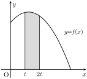

9번원본 D442023년 수능특강 [23009-0102] · Level Up
난도 상 → 중
부교재 원문
양의 실수 전체의 집합에서 정의된 함수 \(f(x)\)가 다음 조건을 만족시킨다.(가)\(f(x)=\begin{cases}-x^2+x & (0
양의 실수 \(m\)에 대하여 함수 \(g(x)=f(x)-mx\)라 할 때, 함수 \(g(x)\)가 \(x=\alpha\)에서 극대 또는 극소인 모든 실수 \(\alpha\)를 작은 수부터 차례대로 나열한 것을 \(\alpha_1\), \(\alpha_2\), \(\alpha_3\), \(\cdots\), \(\alpha_n\), \(\cdots\)이라 하자. \(\alpha_7<6\le\alpha_8\)이고 \(\alpha_1+\alpha_2+\alpha_3+\alpha_4+\alpha_5+\alpha_6+\alpha_7=18\)일 때, \(g'\left(\dfrac{11}3\right)\)의 값은?(나)모든 양의 실수 \(x\)에 대하여 \(f(x+3)=f(x)\)이다.
① \(-\dfrac16\)② \(-\dfrac13\)③ \(-\dfrac12\)④ \(-\dfrac23\)⑤ \(-\dfrac56\)
견본 9번 · 정답 ⑤
양의 실수 전체의 집합에서 정의된 함수 \(f(x)\)가
\(\displaystyle f(x)=\begin{cases}-x^2+x & (0
이고, 모든 양의 실수 \(x\)에 대하여 \(f(x+3)=2f(x)\)를 만족시킨다. 양의 실수 \(m\)에 대하여 함수 \(g(x)=f(x)-mx\)라 할 때, 함수 \(g(x)\)가 \(x=4\)에서 극값을 갖지 않도록 하는 \(m\)의 최솟값은?
① \(2\)② \(\dfrac52\)③ \(3\)④ \(\dfrac72\)⑤ \(4\)
| 원본 핵심 | 주기 조각 이차 f, g=f−mx: g'=f'−m 부호 변화(내부 정지점+꺾인 점) → 주기당 극점 4개, 위치 합으로 m |
|---|---|
| 변형 내용 | [조건 변경·구하는 대상 변경·숫자 변경] (나) \(f(x+3)=f(x)\), 극점 나열 \(\alpha_7<6\le\alpha_8\)·합 \(18\)로 \(m\)을 구해 \(g'\left(\frac{11}3\right)\) → \(f(x+3)=2f(x)\), \(g(x)\)가 꺾인 점 \(x=4\)에서 극값을 갖지 않도록 하는 \(m\)의 최솟값 |
| 견본 풀이 | \(f(x+3)=2f(x)\)이므로 \(3 |
| 빠른 풀이 | \(x=4\)의 좌미분계수 \(2f'(1-)-m=-2-m<0\), 우미분계수 \(2f'(1+)-m=4-m\). 극값이 없으려면 \(4-m\le0\)(등호일 때 오른쪽도 감소) → \(m\ge4\). |
| 원본 대비 | 원문 문장(정의역, 조각함수, \(g(x)=f(x)-mx\))은 그대로. 8회 측정에서 원래 판(극점 나열·합 조건, 경우 나누기)이 체감 8.1로 킬러급이라, 판단을 '꺾인 점에서 좌우 미분계수 부호로 극값 판정(등호 경계 포함)' 하나로 줄임(OP47·OP20). 계수 변형은 살림: 이동식 바깥 계수 \(f(x+3)=2f(x)\)(OP38)로 둘째 주기의 기울기가 \(2\)배가 되어, 분석집 변형①처럼 두 구간의 기울기가 달라지는 장치를 냄. 원문처럼 주기 그대로 풀면 \(2\)(선지 ①). N제 D44 273번(한 조각 주기 \(2\)인 \(x^2-2x\), \(g\)가 극값을 전혀 갖지 않는 \(m\)의 최솟값)과 함수·이동식·묻는 위치(한 점 \(x=4\))가 다름 |
| 오답 설계 | ① \(2\): 원문처럼 \(f(x+3)=f(x)\)로 보고 \(x=4\)의 우미분계수를 \(f'(1+)-m=2-m\)으로 계산한 값 |
| 자료 대조 | 익스텐션 일반 부교재 91p 44번 변형 골격 0.45(다름) · 라이브(학교 기출) 목동고 2023 13번 · 부교재 91p 44번 골격 0.38(다름) · 분석집 분석집 D44 변형① 골격 0.53(다름) |
10번원본 D132023년 수능특강 [23009-0079] · 유형2 함수의 증가와 감소 · 일반
난도 중 → 중
부교재 원문
최고차항의 계수가 \(1\)인 삼차함수 \(y=f(x)\)의 그래프가 두 점 \(\mathrm{A}(1,\,5)\), \(\mathrm{B}(2,\,0)\)을 지나고 열린구간 \((-1,\,1)\)에서 감소할 때, \(f(0)\)의 최솟값은 \(\dfrac qp\)이다. \(p+q\)의 값을 구하시오. (단, \(p\)와 \(q\)는 서로소인 자연수이다.)정답 67
견본 10번 · 정답 ②
최고차항의 계수가 \(1\)인 삼차함수 \(y=f(x)\)의 그래프가 두 점 \(\mathrm{A}(1,\,10)\), \(\mathrm{B}(2,\,0)\)을 지나고 함수 \(f(x)-x\)가 열린구간 \((-1,\,1)\)에서 감소한다. \(f(0)\)이 최솟값을 가질 때, 함수 \(f(x)-x\)의 극댓값은?① \(24\)② \(25\)③ \(26\)④ \(27\)⑤ \(28\)
| 원본 핵심 | 두 점 조건으로 계수를 a 하나로, 아래로 볼록 f'의 구간 ≤0은 양 끝점 f'(-1), f'(1) ≤0만 확인 → f(0)=2a+16 최솟값 |
|---|---|
| 변형 내용 | [조건 변경·숫자 변경·구하는 대상 변경] \(\mathrm{A}(1,\,5)\), \((-1,\,1)\)에서 \(f\)가 감소, \(f(0)\)의 최솟값 \(\frac qp\)(\(p+q\)) → \(\mathrm{A}(1,\,10)\), \(f(x)-x\)가 \((-1,\,1)\)에서 감소, \(f(0)\)이 최소일 때 \(f(x)-x\)의 극댓값(5지) |
| 견본 풀이 | \(f(x)=x^3+ax^2+bx+c\)라 하면 \(f(1)=10\), \(f(2)=0\)에서 \(1+a+b+c=10\), \(8+4a+2b+c=0\)이므로 \(b=-3a-17\), \(c=2a+26\)이다. \(h(x)=f(x)-x\)라 하면 \(h'(x)=3x^2+2ax-3a-18\)이고, 그래프가 아래로 볼록하므로 \(h(x)\)가 열린구간 \((-1,\ 1)\)에서 감소하려면 \(h'(-1)=-5a-15\le0\), \(h'(1)=-a-15\le0\)이어야 한다. 즉 \(a\ge-3\)이다. \(f(0)=c=2a+26\)은 \(a=-3\)일 때 최솟값 \(20\)을 갖고, 이때 \(h(x)=x^3-3x^2-9x+20\), \(h'(x)=3(x+1)(x-3)\)이다. \(h(x)\)는 \(x=-1\)에서 극대이므로 극댓값은 \(h(-1)=-1-3+9+20=25\)이다. |
| 빠른 풀이 | \(f=x^3+ax^2-(3a+17)x+2a+26\). \((f-x)'(-1)=-5a-15\le0\)이 강한 조건 → \(a=-3\)에서 \(f(0)\) 최소. 등호라 \(x=-1\)이 \(f(x)-x\)의 극대점: \(f(-1)+1=25\). |
| 원본 대비 | 원문의 '두 점으로 계수를 \(a\) 하나로 → 아래로 볼록한 도함수의 양 끝값 판정 → \(f(0)\)이 최소인 \(a\)'와 발문 앞부분은 그대로. 뼈대는 후보_순위 2(GEN1-01-014: 최솟값일 때 부등식의 등호가 성립해 구간 끝 \(x=-1\)이 극대점, 극댓값을 물음, OP34·OP20)이고, 그 위에 조작_보강 1의 장치 하나('\(f(x)\)가 감소' → '\(f(x)-x\)가 감소', 기준선을 직선으로, OP12)를 얹음. 이때 등호가 서는 함수는 \(f(x)-x\)라 극댓값도 \(f(x)-x\)의 것을 물음(\(f\) 자체의 극대점은 무리수). 수치는 \(\mathrm{A}(1,\,5)\) → \(\mathrm{A}(1,\,10)\)으로 \(h'=3(x+1)(x-3)\)이 깔끔하게 되도록 한 세트. 원문 단답 \(p+q\)는 5지로(OP41). N제 D13(35–40번: \((-1,\,2)\)·\(\mathrm{A}(1,\,k)\)·접점·\(f'\le-3\)·정수 계수·\((-1,\,k)\))과 조건·묻는 값이 다름 |
| 오답 설계 | ① \(24\): 극댓값을 \(f(x)-x\)가 아니라 \(f(x)\)의 \(x=-1\)에서의 값 \(f(-1)\)로 계산한 값 |
| 자료 대조 | 익스텐션 일반 부교재 81p 13번 변형 골격 0.76(구조 유사) · 라이브(학교 기출) 구리고 2020 4번 · 부교재 82p 17번 골격 0.29(다름) · 분석집 분석집 I22 변형① 골격 0.29(다름) |
11번원본 M72025년 수능완성 [25054-0158] · 유형1 함수의 최대와 최소 · 일반
난도 중 → 중
부교재 원문
그림과 같이 닫힌구간 \([0,\ 2]\)에서 정의된 함수
\(\displaystyle f(x)=\begin{cases}x & (0\le x<1)\\ \sqrt{-x+2} & (1\le x\le2)\end{cases}\)
와 실수 \(t\) \((0
① \(\dfrac{20}{27}\)② \(\dfrac{22}{27}\)③ \(\dfrac89\)④ \(\dfrac{26}{27}\)⑤ \(\dfrac{28}{27}\)
견본 11번 · 정답 ①
그림과 같이 닫힌구간 \([0,\ 10]\)에서 정의된 함수 \(f(x)=-x^2+6x+40\)과 실수 \(t\) \((0
① \(4\)② \(\dfrac{7}{2}\)③ \(3\)④ \(\dfrac{5}{2}\)⑤ \(2\)
| 원본 핵심 | 조각함수(일차+무리)와 y=t 교점 P(t,t), Q(2-t²,t) → 사다리꼴 넓이 S(t) 삼차식 미분 최대 |
|---|---|
| 변형 내용 | [함수 교체·조건 변경·구하는 대상 변경] 조각함수(\(y=x\), \(y=\sqrt{-x+2}\))와 직선 \(y=t\)가 만드는 사각형 \(\mathrm{POHQ}\)의 넓이 → 곡선 \(y=-x^2+6x+40\)과 \(x\)축, 두 직선 \(x=t\), \(x=2t\)로 둘러싸인 부분의 넓이(예상밖 1의 정적분 넓이 함수, 구간 끝을 \(t\)의 일차식 \(2t\)로, 조작_보강 1), \(S(t)\)의 최댓값 → \(S(t)\)가 최대가 되는 \(t\)의 값 |
| 견본 풀이 | \(0 \(S'(t)=2f(2t)-f(t)=2(-4t^2+12t+40)-(-t^2+6t+40)=-7t^2+18t+40=-(7t+10)(t-4)\)이다. \(0 |
| 빠른 풀이 | \(S'(t)=2f(2t)-f(t)=-7t^2+18t+40=-(7t+10)(t-4)\) → \(t=4\)에서 최대(\(2t=8<10\)이라 넓이 그대로). |
| 원본 대비 | DB 예상밖 1(넓이 함수를 정적분으로 정의해 \(S'(t)\)를 피적분함수의 차로)을 뼈대로 조작_보강 1(구간 끝을 \(t\)의 일차식 \(2t\)로, OP12) 하나를 얹었다. 원문의 무리함수 조각은 기말 범위(다항함수) 밖이라 이차함수로 바꾸었고, '그림과 같이 닫힌구간 … 에서 정의된 함수 … 와 실수 \(t\)에 대하여 … 넓이를 \(S(t)\)라 할 때' 문장과 \(t\)의 범위는 원문 틀대로 두었다. 정의역 \([0,\ 10]\)과 범위 \((0 |
| 오답 설계 | ⑤ \(2\): \(S'(t)=f(2t)-f(t)\)로 \(2t\)의 미분계수 \(2\)를 빠뜨려 \(-3t^2+6t=0\)에서 얻은 값(구간 \([t,\ 2t]\)의 가운데가 꼭짓점 \(x=3\)에 오도록 잡은 값과 같다) |
| 자료 대조 | 익스텐션 일반 부교재 107p 7번 변형 골격 0.47(다름) · 라이브(학교 기출) 현대고 2025 4번 · 부교재 180p 51번 골격 0.30(다름) · 분석집 분석집 J24 변형① 골격 0.29(다름) |